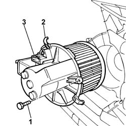

5020A34 heater fan motor - r+r with heater box removed
- Path
- Procedures > 50 AUXILIARY UNITS > 5020 HEATER > 5020A box and components > 5020A34 heater fan motor - r+r with heater box removed
- Kind
- repair procedure (removal / refitting; the operation number is the code)
- Applies to
- all engines; all production periods
- Interactive page
- https://sloeber94.github.io/elrnDB-fPnd/en/#/2752867
Applies to: all engines; all production periods
 Removing
Removing
 Refitting
Refitting1. Undo retaining bolts
2. Release the clip.
3. Rotate the heater fan motor in a clockwise direction and remove it.

Applies to: all engines; all production periods
Refitting
RemovingPosition the heater fan motor, rotate it in an anti-clockwise direction and check that it is secure.
Tighten the retaining bolt.